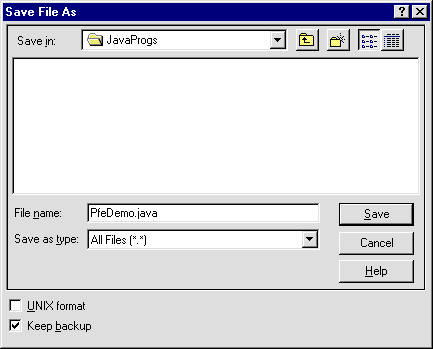

Saving the Source Code
Before the source can be compiled it has to be
saved using a systematic naming convention. As the name of this
class is PfeDemo it must be saved in a file called PfeDemo.java,
including capitalisation as shown. This can be accomplished by
using the File menu Save option which will post a
standard file dialog.

It is assumed that the file is saved in a
directory called C:\JavaProgs.